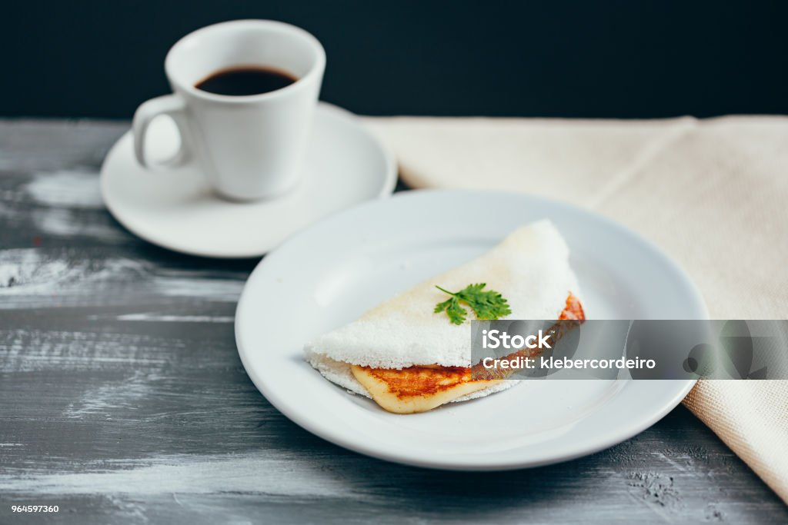

Tapioca

Descricao
A tapioca, iguaria de origem indígena e onipresente na mesa brasileira, é feita a partir da fécula da mandioca, também conhecida como goma ou polvilho doce. O preparo é fascinante pela sua simplicidade: a goma hidratada é peneirada sobre uma frigideira quente, onde o calor faz com que os grãos se unam em uma rede sólida, formando um disco macio por dentro e levemente crocante por fora. Por não conter glúten e ser extremamente rápida de fazer, ela se tornou a substituta favorita do pão em dietas modernas, mantendo a tradição de ser um alimento energético e versátil.
O grande charme da tapioca reside na infinidade de recheios que ela pode acomodar, adaptando-se a qualquer momento do dia. Na versão clássica, ela recebe apenas manteiga e coco ralado, mas ganha sofisticação com queijos, carnes desfiadas ou até opções doces como leite condensado e frutas. Dobrada ao meio em formato de meia-lua, ela deve ser servida imediatamente após o preparo para garantir que a massa não endureça, proporcionando uma experiência de sabor que equilibra a neutralidade da mandioca com o contraste do recheio escolhido.
Ingredientes
Principais
- 2 xícaras de goma de mandioca hidratada (própria para tapioca).
- 1 pitada de sal (opcional, misturada na goma).
Sugestoes de Recheio
- Manteiga de garrafa ou comum.
- Queijo coalho ou queijo muçarela ralado.
- Coco ralado fresco (opcional).
Passos
- Peneire a goma: Coloque a goma hidratada em uma peneira sobre uma tigela e passe-a com as mãos para que ela caia soltinha. Isso garante uma tapioca macia e sem grumos.
- Aqueça a frigideira: Leve uma frigideira antiaderente ao fogo médio. Não é necessário untar com óleo ou manteiga.
- Forme o disco: Com uma colher, espalhe a goma peneirada na frigideira quente, cobrindo todo o fundo. Nivele a superfície para que o disco fique uniforme, mas não aperte dema
- Aguarde a liga: Deixe cozinhar por cerca de 1 a 2 minutos. Quando as bordas começarem a levantar e a massa estiver unida, a tapioca está no ponto.
- Recheie: Adicione o recheio de sua preferência (como queijo ou manteiga) sobre uma das metades do disco ainda no fogo.
- Dobre e finalize: Dobre a massa ao meio, cobrindo o recheio. Deixe mais alguns segundos de cada lado para o queijo derreter e retire da frigideira.
Pagina Inicial